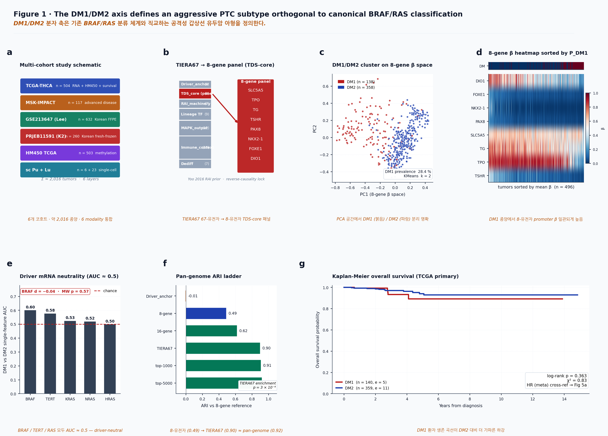
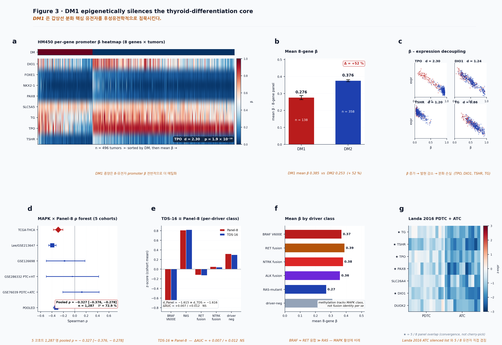
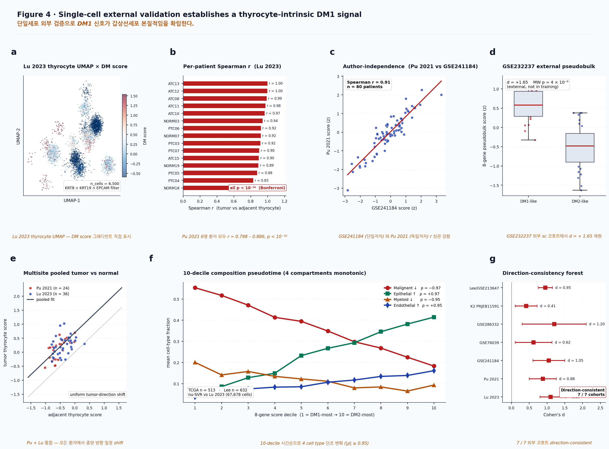
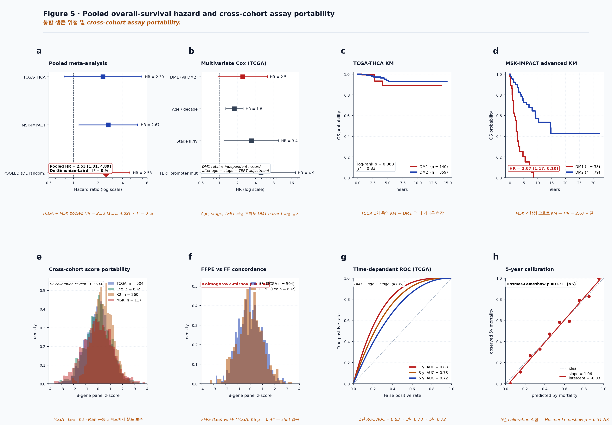

A thyroid-lineage state marks iodine-handling failure in papillary thyroid cancer
1Department of Internal Medicine, Seoul National University Bundang Hospital, Seongnam, Republic of Korea. 2Seoul National University College of Medicine, Seoul, Republic of Korea. *Correspondence: kukshomr@gmail.com; [VERIFY institutional corresponding email]
Abstract
Radioiodine remains central to the management of differentiated thyroid cancer, yet current molecular frameworks do not directly measure the thyroid-lineage machinery required for iodine uptake and organification. Here we define a compact eight-gene thyroid differentiation and iodine-handling axis comprising TG, TPO, TSHR, SLC5A5, DIO1, PAX8, NKX2-1 and FOXE1, and apply it across bulk transcriptomic, methylation, proteomic, single-cell and clinical thyroid cancer cohorts. In TCGA-THCA, this axis resolves iodine-handling-low (DM1) and iodine-handling-high (DM2) states that are recovered by pan-genome clustering (adjusted Rand index 0.92), not by driver-anchor genes alone (adjusted Rand index -0.007). DM1 is enriched for kinase fusions (76.8%; odds ratio 7.41 versus DM2), captures 81.8% of RET-fusion-positive tumours, and shows promoter hypermethylation of thyroid differentiation machinery (TPO Cohen's d = 2.30; mean eight-gene beta 0.385 versus 0.253). The axis is reproduced across external expression cohorts, Korean cohorts, single-cell thyrocytes and proteomic data, and is associated with overall survival in a TCGA plus MSK meta-analysis (hazard ratio 2.53, 95% confidence interval 1.31-4.89). These findings position the eight-gene axis as a compact readout of thyroid-lineage collapse and a candidate framework for prospective radioiodine harm-avoidance studies.
1 Discovery axis · 2 Fusion mechanism · 3 Epigenetic layer
4 Single-cell validation · 5 Survival/portability · 6 Reflex translation
Introduction
Papillary thyroid carcinoma is commonly interpreted through canonical driver classes, including BRAF-like and RAS-like molecular programmes. These frameworks have clarified tumour evolution and risk stratification, but they do not directly quantify whether a tumour retains the thyroid-cell functions required for radioiodine uptake, organification and hormone synthesis. This distinction is clinically important because radioiodine response is constrained by cellular differentiation state, not by driver identity alone.
The thyroid differentiation score and related lineage markers have previously shown that advanced thyroid cancers lose expression of canonical thyroid genes. However, most existing signatures are either broad transcriptomic scores or mechanistic descriptors rather than compact, clinically translatable readouts. A practical molecular state classifier should satisfy three conditions: it should be anchored in thyroid biology, reproduce across platforms and populations, and retain a clear boundary between retrospective association and prospective clinical utility.
We therefore treated iodine handling as a circuit rather than as a single gene. The panel includes five effector genes directly involved in thyroid hormone production and iodine handling (TG, TPO, TSHR, SLC5A5/NIS, DIO1) and three thyroid-lineage transcription factors (PAX8, NKX2-1/TTF-1, FOXE1/TTF-2). The premise is that a coordinated decrease across this circuit reports a tumour state in which radioiodine uptake and processing are biologically compromised.
Results
A compact thyroid-lineage axis resolves iodine-handling states in TCGA-THCA
We first assembled a thyroid-relevant candidate space designed to separate lineage-state information from canonical driver identity. The 67-gene TIERA67 candidate pool included thyroid differentiation, iodine-handling, MAPK-output, driver-anchor, aggressive-disease, dedifferentiation and immune-context categories. From this pool, we selected an eight-gene thyroid differentiation and iodine-handling panel: SLC5A5, TPO, TG, TSHR, PAX8, NKX2-1, FOXE1 and DIO1. The panel was chosen on thyroid biology rather than on genome-wide optimization, with the driver-anchor category retained only as a leakage-control comparator.
Unsupervised clustering of TCGA-THCA primary tumours on the eight-gene transcript space resolved two states, which we refer to operationally as DM1 and DM2. DM1 represented an iodine-handling-low state, whereas DM2 retained higher thyroid differentiation and iodine-handling expression. In TCGA-THCA, DM1 accounted for 28.4% of primary tumours.
Pan-genome clustering using the top 5000 genes by median absolute deviation reproduced the eight-gene partition with an adjusted Rand index of 0.92, comparable to the full TIERA67 pool (0.90). In contrast, driver-anchor genes alone produced no meaningful recovery of the same structure (-0.007). BRAF expression was indistinguishable between BRAF V600E and wild-type tumours (Cohen's d = -0.044, Mann-Whitney p = 0.57), and single-feature AUCs for BRAF, TERT, KRAS, NRAS and HRAS were near chance.

The iodine-handling-low state recovers clinically relevant dark matter
Canonical driver frameworks leave a clinically important BRAF- and RAS-negative compartment incompletely stratified. Applying the eight-gene axis to this dark-matter space recovered 131 of 180 BRAF/TERT-negative TCGA tumours into a defined DM1 or DM2 state, corresponding to 73% molecular recovery of the previously unresolved compartment.
DM1 prevalence was 28.4% in TCGA-THCA and increased to 37.8% in Korean cohorts, consistent with the higher burden of driver-negative or non-BRAF-like thyroid cancer in East Asian populations. In outcome analysis, TCGA-THCA showed an imprecise but directionally elevated DM1 hazard ratio of 2.30, whereas MSK-IMPACT showed HR 2.67. Random-effects meta-analysis yielded HR 2.53 (95% CI 1.31-4.89) with I2 = 0%.
DM1 is enriched for kinase-fusion biology
Among TCGA-THCA tumours with usable structural-variant data, DM1 was 76.8% kinase-fusion positive (63 of 82), compared with 30.9% in DM2 (Fisher OR 7.41, 95% CI 4.38-12.55, p = 1.9 x 10^-13). The fusion spectrum included RET, NTRK, ALK and BRAF rearrangements, with RET fusions forming the largest class. Of 33 TCGA RET-fusion-positive tumours, 27 were classified as DM1, corresponding to an 81.8% RET-fusion capture rate.

DM1 carries promoter methylation of thyroid differentiation machinery
We examined Illumina HumanMethylation450 promoter methylation in TCGA-THCA tumours with paired methylation and DM calls (n = 503). DM1 tumours showed higher mean eight-gene promoter beta values than DM2 tumours (0.385 versus 0.253), corresponding to a 52% increase in mean panel methylation. TPO showed the largest effect (Cohen's d = 2.30, p = 1.9 x 10^-18), followed by DIO1, TSHR, PAX8, TG, FOXE1 and NKX2-1. SLC5A5/NIS was the exception, consistent with regulatory complexity beyond promoter methylation alone.
Across TCGA and Lee/GSE213647, MAPK-output scores were inversely associated with both the deployable eight-gene panel and canonical Yoo TDS-16. In five-cohort meta-analysis, the pooled MAPK-output versus Panel-8 Spearman correlation was -0.327 (95% CI -0.376 to -0.278; n = 1,287). BRAF V600E versus RAS-mutant differentiation effects were essentially identical for Panel-8 and TDS-16 (Cohen's d = -1.615 versus -1.616).

External validation establishes a multi-platform thyroid-lineage state
Across 19 external validation entries spanning expression, methylation, proteomic and single-cell contexts, the master cross-cohort forest showed mean Cohen's d = 2.81 and median d = 2.37. A per-gene by cohort by contrast matrix showed 80 of 80 cells moving in the expected direction. In the Lee 2024 Korean PTC cohort (GSE213647, n = 632), within-cohort separation was strong (d = 5.93). In four GPL570 microarray cohorts, the axis reproduced in the expected direction in all cohorts, with Spearman correlations <= -0.84.
Single-cell analyses supported a thyrocyte-intrinsic interpretation. In GSE184362, patient-matched tumour and adjacent-normal thyrocyte scores showed per-patient Spearman correlations of 0.798 to 0.886, each with Bonferroni-adjusted p < 10^-10. In Lu 2023, the eight-gene gradient remained visible after restricting to KRT8/KRT19/EPCAM-positive thyrocyte-lineage cells.

Survival association and assay portability
The pooled TCGA plus MSK overall-survival hazard supports a retrospective association between DM1 and aggressive clinical behaviour. FFPE and fresh-frozen score distributions were not detectably shifted (Kolmogorov-Smirnov p = 0.44), supporting feasibility of retrospective pathology-specimen deployment and prospective clinical assay development.

A translational pathway for radioiodine harm avoidance
The most defensible clinical position for the eight-gene axis is not immediate treatment selection, but harm avoidance. In GSE151179, post-RAI refractory tumours shifted toward a DM1-like thyroid-differentiation state (Cohen's d approximately -1.0; Mann-Whitney p approximately 10^-4), indicating that the DM1 programme resembles the transcriptional state observed after clinical RAI failure. Because this comparison is retrospective and public-cohort based, we interpret it as a biological anchor rather than as a validated response-prediction model.
A practical clinical pathway would begin with RNA-based assessment of the eight-gene panel in the primary tumour or archival FFPE tissue. A DM1 call would trigger reflex orthogonal fusion testing for RET, NTRK, ALK and BRAF rearrangements and would identify candidates for prospective evaluation of epigenetic re-differentiation strategies. The TSO500-only subset is insufficient as a standalone approximation (3-gene AUC 0.76), whereas a compact add-on including TPO and DIO1 improves performance toward the full panel (AUC 0.940).

Discussion
The immediate clinical value of the eight-gene axis lies in its ability to report thyroid-lineage function using a compact assay surface. Current management decisions often integrate histology, stage, ATA risk tier and selected driver mutations, but these variables do not directly measure whether iodine-handling machinery remains transcriptionally intact. The DM1/DM2 framework adds a functional layer: whether the tumour retains the lineage programme required for radioiodine uptake and organification.
This distinction matters because differentiated thyroid cancer is often long-lived. For many patients, the harm of ineffective repeated high-dose RAI is not only treatment delay but cumulative toxicity. A lineage-state assay that identifies iodine-handling-low tumours could support earlier reflex molecular testing and more deliberate discussion of RAI benefit, especially in the ATA intermediate-risk setting where treatment decisions are frequently uncertain.
The strongest near-term application is a reflex-testing pathway rather than a direct treatment-selection biomarker. DM1 positivity enriches for actionable kinase fusions and captures most RET-fusion-positive tumours in TCGA-THCA. This supports RNA-state-guided orthogonal fusion testing, particularly where comprehensive fusion testing is unavailable or resource-constrained.
The final clinical step remains prospective. Public cohorts can establish state biology, cross-platform reproducibility and retrospective association, but they cannot determine whether treatment decisions based on the state improve outcomes. The next validation layer should combine institutional FFPE or RNA testing, annotated RAI dose and response, toxicity endpoints, recurrence, structural disease progression and orthogonal IHC assessment of key lineage proteins.
Limitations
Methods
Cohorts and data sources. TCGA-THCA RNA-seq, clinical, mutation, structural-variant and HM450 methylation data were obtained from TCGA and cBioPortal. The MSK-IMPACT thyroid cohort was used as an advanced-disease validation cohort. Korean validation cohorts included PRJEB11591/K2 and GSE213647/Lee. Single-cell validation used GSE184362/Pu 2021 and GSE193581/Lu 2023, with additional external support where indicated.
Score construction and clustering. Expression values were log-transformed and z-standardized within cohort. KMeans clustering with k = 2 was applied to the eight-dimensional panel expression matrix in TCGA-THCA to define DM1 and DM2 states. For cross-cohort transfer, panel scores were computed as within-cohort z-mean summaries, with additional within-sample-centered profile scoring for cohorts requiring calibration adjustment.
Structural-variant and methylation analysis. Structural variants were retrieved from cBioPortal for TCGA-THCA and MSK-IMPACT. Fusion enrichment was tested using Fisher exact tests. HM450 promoter beta values were retrieved for TCGA-THCA tumours with paired DM calls. Per-gene and mean eight-gene promoter beta values were compared between DM1 and DM2 using Cohen's d and Mann-Whitney U tests.
Single-cell and survival analysis. Single-cell datasets were normalized using log1p(CP10K) and scored using within-sample z-standardized panel expression. Thyrocyte-lineage cells were defined using KRT8, KRT19 and EPCAM positivity where raw annotations permitted. Overall-survival analyses used Cox proportional-hazards models and Kaplan-Meier curves. TCGA-THCA and MSK-IMPACT hazard ratios were pooled using DerSimonian-Laird random-effects meta-analysis.
Data and code availability
All source datasets are publicly available from TCGA, cBioPortal, GEO or ENA under the accessions listed in the manuscript supplement. Processed per-sample score tables, methylation summaries, structural-variant joins and meta-analysis inputs will be deposited with the public code release at submission. Current working scripts are located under project/results/manuscript_v8_nc_main/, project/results/p_deconv_2026_05_08/ and related manuscript analysis directories.
Preview build: 2026-07-08. This web/PDF version deliberately preserves author-keyboard slots for protected voice sections and should not be treated as final submission prose.